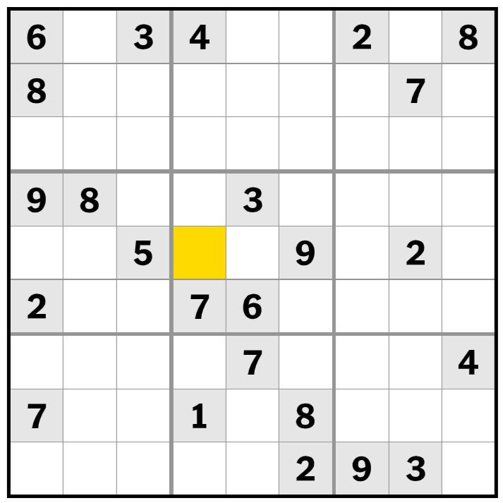

Last updated Sep. 1, 2024
I’ve always loved doing the sudoku.
It started in the summer of 2015. I was a senior in high school and had just started the college application process. Like many teenagers, I signed up for the SAT. Like many teenagers, I compiled a list of safety and target schools. And, like many teenagers, I was beginning to panic about acceptances.
One particular afternoon, I found myself down a rabbit hole full of self doubt and insecurity. I felt like I wasn’t smart enough, or my grades would pull down my application, or that my essays wouldn’t stand out.
I needed to challenge this voice in my head. I knew I was smart and capable (or so I thought). I looked around for a way to prove it and saw the Sunday newspaper on the coffee table in front of me, open to the puzzles page. I told myself if I could solve that day’s sudoku, I could prove to myself that I had what it takes to get acceptances. I solved that sudoku and haven’t stopped doing it since.
I got so into the puzzle in high school, I completed 100 sudokus in 100 consecutive days. I’d take our newspaper’s puzzles page to school and solve it during class. A classmate once said while most students had their phones out under their desks, I had the sudoku. When I moved to the US for college, I bought a book full of puzzles. I was crazy about it.
And then I stopped doing it just as quickly as I had started.
In October 2020, a girl I liked texted me: “Do u wanna have a sudoku race 👉🥺👈”
We solved that day’s New York Times’ easy puzzle and xx sudokus since then to see who could complete it first.
We even started a spreadsheet to track our times. Our competitive natures pushed us to challenge each other almost daily. Like in high school, I was constantly thinking about how to get faster.
Then, in January 2023, I made a breakthrough. I started tracking what grids I fill out and how I fill them out. And in the weeks since, I started to analyze my performance to look for patterns and ways I could speed up. As a throwback to my high school self, I decided to analyze 100 sudokus to see what I could learn. This essay has a few insights I’ve found.
Like Jeopardy! and its daily doubles, the Times’ sudoku grids tend to have the same cells prefilled. On average, the easy sudoku comes with xx values prefilled.
Data above is from xxx Times sudokus. Hover over each cell above to see how often it came prefilled.
When I first see a sudoku grid, my instinct is to look for naked singles. Naked singles are cells where there can only be one possible value. (They’re also called sole candidates, but why would you call them that when you could say naked singles? I digress.)
In the NYTimes grid above, only the number 8 can be played in the highlighted cell.
Using the process of elimination, I identify naked singles and solve those cells. I only ever fill in a value when it’s a naked single, i.e., I never guess. So when I fill out the grid, I almost never redo cells once I fill them. This is a tradition I’ve digitized — high school me would fill out grids with a pen.
As you solve each cell in the sudoku, you eliminate possible values throughout the grid. For example, putting a 5 in one cell means you can’t play a 5 anywhere else in that row, column, or section. In the process of filling out cells, you create more naked singles.
Essentially, by getting the numbers of these naked singles, you're introduced to their other naked single friends.
And this is a great way to analyze my performance.
From this thread, it looks like there isn't a strong correlation between how long I take to fill out a cell and how many steps a cells remains a naked single for.
After conducting this analysis, I reflected on my experiences filling out each puzzle. I realized that when I start a grid, I tend to focus on the section of the puzzle that is most filled and look around for naked singles from there.
But once I fill out a cell, what cells do I move to immediately after? The only way to truly check this is by tracking my eye movements when solving the puzzle, and I’m not that desperate (yet).
The next best thing is to visualize every cell I’ve filled out, in the order in which they were filled out. In the chart below, sudoku cells are read from left to right in the order in which they were filled, and each puzzle is ordered from top to bottom.